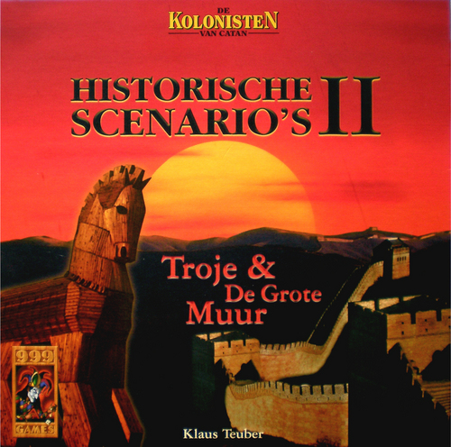

Uitbreidingssets uitbreidingsset voor 5 & 6 spelers Meer info... Zeevaarders Meer info... Steden en Ridders Meer info... Kooplieden en Barbaren Meer info... Piraten en Ontdekkers Meer info...
Kleine uitbreidingen De Specialisten van Catan Meer info... De Koloniën van Catan Meer info... De Woestijnruiters van Catan Meer info... Het Grote Kanaal van Catan Meer info... De Wereldwonderen van Catan Meer info... Diamanten voor Catan Meer info... De Vissers van Catan Meer info...
Historische Scenario's Cheops & Alexander de Grote Meer info...  Troje & De Grote Muur Meer info...